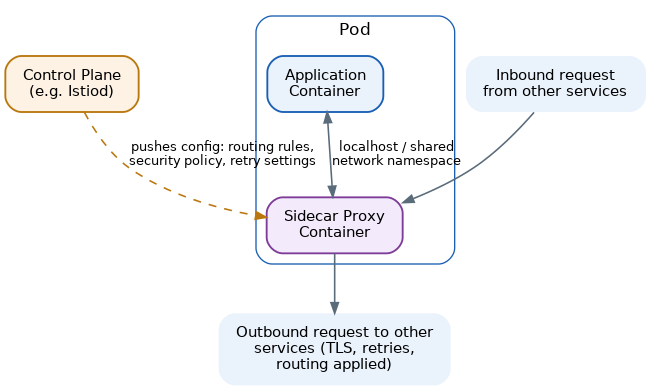
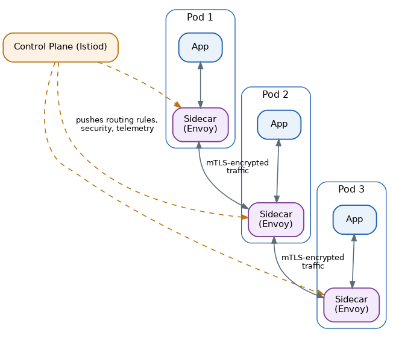

Sidecar Pattern
Table of Contents
Overview
A motorcycle sidecar is a small compartment bolted onto the side of a motorcycle: it carries an extra passenger or cargo, it can be attached or removed without redesigning the motorcycle itself, and it goes wherever the motorcycle goes. The Sidecar pattern borrows this idea directly for software — a helper component is deployed right alongside a main application, adding capability to it without requiring any change to the application's own code. In practice, a sidecar is almost always a second container running inside the very same deployment unit as the main application container — most commonly the same Kubernetes pod. The two containers are effectively inseparable: they start together and stop together, and they typically share a network address, which lets the sidecar transparently sit in the path of the application's traffic, or quietly read the files and logs the application produces. The pattern is best known today through service mesh technology, where tools such as Istio inject an Envoy proxy as a sidecar next to every microservice instance in a cluster, handling networking concerns consistently across an entire fleet of services.
The Problem: Cross-Cutting Concerns After the Monolith Is Gone
Breaking a monolith apart into microservices solves plenty of problems, but it quietly reintroduces a subtler one: every one of those new services still needs the same set of supporting capabilities — retrying failed calls, encrypting traffic with TLS, discovering other services, collecting metrics and logs, enforcing security policy. If each team bakes that logic directly into its own service's code, the result is dozens of services each carrying a bundled-in copy of the same infrastructure logic, tangled up with its actual business logic. It's really just a smaller, more numerous version of the original monolith problem, spread across many codebases instead of one.
This duplication causes real, ongoing pain. Teams working in different programming languages end up reimplementing the same logging or retry behavior differently in each one. When a security policy needs to change — say, dropping support for an older TLS version — someone has to track down and patch that logic inside every single service instead of changing it in one place, and small inconsistencies between each team's hand-rolled implementation creep in over time. There's also the everyday challenge of extending an older or legacy service with a brand-new capability — like modern observability or mutual TLS encryption — without wanting to touch or risk breaking its existing, already-working code.
The Sidecar Solution
The Sidecar pattern's answer is to pull all of that shared, cross-cutting infrastructure logic out of application code entirely and move it into a separate, reusable component deployed next to every service instance. The application no longer needs to know how to retry a call, encrypt its own traffic, or format telemetry for a monitoring system — it simply talks to its own local sidecar, usually over "localhost" (the loopback network address), and the sidecar takes care of the rest, either before a request leaves the machine or right after it arrives.
Because the sidecar is a separate process from the application, it can be written once, in whatever language suits it best, and reused across every service in an organization regardless of what language each service's own business logic happens to be written in. When a policy needs to change — a new security rule, an updated retry setting — engineers roll out a new version of the sidecar across the whole fleet of services, and not a single line of application code has to be touched.
The Architecture
In a Kubernetes-based system, this typically looks like a single pod containing two or more containers: the main application container, plus one or more sidecar containers. Because they live in the same pod, they share a network namespace — so the sidecar can intercept traffic addressed to the application, and the application can simply call "localhost" to reach its sidecar — and they share a lifecycle, so scheduling, scaling, or terminating the pod always takes the sidecar along with it.
At larger scale, this same idea grows into what's called a service mesh. Every service instance gets its own sidecar proxy, and together these form the mesh's data plane, while a separate, centralized control plane (Istio's "Istiod" is the best-known example) pushes configuration out to every sidecar at once — routing rules, security policies, retry and circuit-breaker settings — so the entire fleet of sidecars behaves consistently without engineers configuring each one by hand.
The Sidecar pattern is also the general-purpose parent of two more specialized patterns worth knowing: the Ambassador pattern, a sidecar focused specifically on handling outbound network connectivity — TLS, routing, retries — on the application's behalf, and the Adapter pattern, a sidecar that translates an application's native metrics, logging, or protocol format into whatever a shared monitoring or messaging system expects.

An Example: Adding TLS and Metrics to a Legacy Order Service
Consider an Order Service that was written years ago and has no built-in support for encrypting its network traffic or reporting detailed request metrics. Rather than rewriting the service, a team adds an Envoy proxy as a sidecar container in the same pod, and the request flow now looks like this:
- Another service wants to call the Order Service. Instead of connecting directly to the Order Service's own container, its traffic is routed to the Order Service's sidecar proxy first.
- The sidecar proxy terminates the incoming connection, checks it against the security policy pushed down from the control plane, decrypts the TLS traffic, and records metrics about the request (how long it takes, whether it succeeds).
- The sidecar forwards the plain, decrypted request to the actual Order Service application container over "localhost" — the Order Service code sees a completely ordinary, unencrypted local request and needs no awareness that TLS or metrics collection ever happened.
- The Order Service processes the request as usual and sends its response back to its own sidecar.
- The sidecar re-encrypts the response, forwards it back out to the original caller (or the caller's own sidecar), and reports the completed request's metrics to a central monitoring system.
From the Order Service code's point of view, nothing changed at all — it still just handles a simple local request and returns a simple local response. All of the encryption, policy enforcement, and telemetry work happened transparently in the sidecar sitting right next to it.
Performance Implications
Adding a sidecar means every network call now takes an extra hop through a proxy, so it's fair to ask what that costs. For most everyday CRUD-style API traffic, modern proxies like Envoy add only a small amount of latency — often in the low single-digit milliseconds. As a real-world data point, Shopify reported that after adopting Istio broadly across its services, typical (p99) latency between services increased by only a few milliseconds on average — a cost most applications can comfortably absorb.
That said, the overhead isn't always negligible. Under very high request rates, some service mesh benchmarks have shown noticeably larger latency increases with a traditional one-sidecar-per-pod design, which is part of why newer "sidecar-less" or "ambient" mesh modes have emerged to reduce that overhead. There's also a real resource cost: each sidecar instance uses its own slice of CPU and memory (commonly tens to a few hundred megabytes of RAM), and multiplied across hundreds or thousands of running pods in a large cluster, that adds up to a meaningful amount of extra infrastructure spend.
Because of this, the sidecar approach is an excellent fit for typical web and microservices traffic, where the consistency, security, and observability benefits clearly outweigh a few extra milliseconds per call — but teams building extremely latency-sensitive systems, such as high-frequency trading or real-time multiplayer gaming, need to weigh that overhead much more carefully, and may choose lighter-weight alternatives instead.
System Design Examples
The most prominent real-world example is Istio, an open-source service mesh that automatically injects an Envoy sidecar proxy into every pod in a Kubernetes namespace, handling traffic routing, load balancing, mutual TLS encryption between services, retries, and detailed telemetry — all without requiring any application code changes. Envoy itself, the proxy Istio relies on, was originally created at Lyft to solve exactly this kind of cross-cutting networking problem across their many microservices.
Google Cloud offers a managed version of the same idea through its Cloud Service Mesh (formerly Anthos Service Mesh), which is built on Istio and lets organizations apply consistent traffic management and security policy across services running not just in one Kubernetes cluster, but across multiple clusters, multiple clouds, and on-premises data centers.
Beyond full service meshes, sidecars are also used for simpler, more focused jobs: a "logging sidecar" that tails an application's log files and ships them to a centralized logging backend, so the application itself never needs to know or care where its logs end up; or the Dapr project, which offers a sidecar that gives applications simple, consistent APIs for things like state management, messaging, and service invocation, regardless of which language the application is written in.
